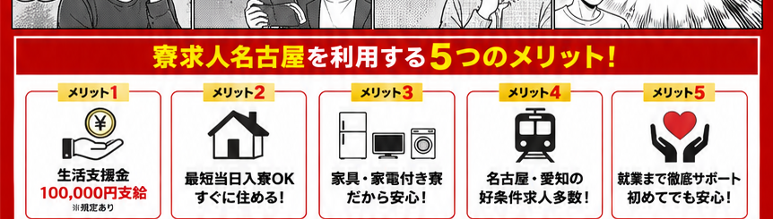
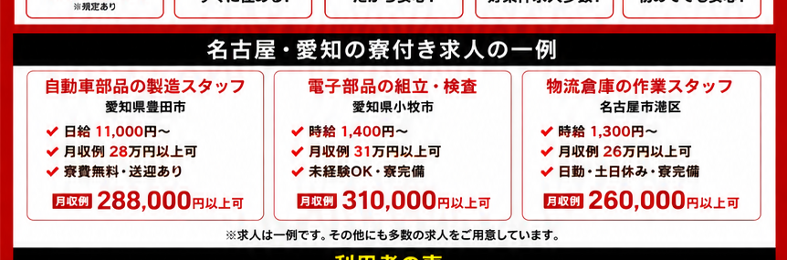
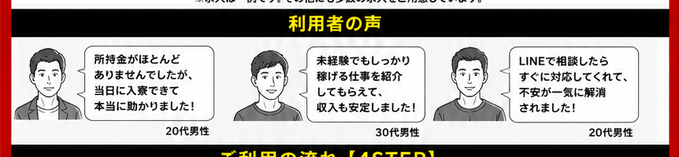

突然、住む場所と仕事を
同時に失ってしまった。
同時に失ってしまった。
これから
どうしよう…
どうしよう…
所持金も
あとわずか。
あとわずか。
╥﹏╥
ズーン…
とりあえず
ネットカフェへ…
ネットカフェへ…
NET CAFE
24H
24H
※対象求人・支給条件があります。詳細はLINEでご確認ください。
本日 LINE相談受付中!!
LINE＼ 30秒で相談完了 ／寮付き求人を無料で紹介›「住む場所がない」「お金がない」「すぐ働きたい」
そんな状態から新生活を始めるまで。
寮に早く入りたいです
希望条件を確認してご案内します!
✓住む家がなくなった
✓所持金が切れそう
✓携帯が止まって面接も受けにくい
✓身分証・口座などに不安がある
✓他社では応募を断られてしまった
✓とにかく早く生活を立て直したい

支給条件・対象求人あり
寮費無料・補助案件も確認
利用できる支援を確認
移動条件は事前確認
まずはLINEからご相談

※上記は掲載用モデル例です。実際の求人状況・募集条件は応募時にご確認ください。
LINE希望条件を送るだけ今ある求人を聞いてみる›
県外から愛知へ移る予定だったので、寮付き求人をまとめて比較できるのが助かりました。
工場未経験でしたが、収入や寮費を確認しながら条件を相談できました。
入寮希望日を最初に伝え、空き状況の確認から進めてもらえました。
気になる点や希望条件をLINEで送信してください。
寮・給与・勤務地などを確認して求人をご提案します。
選考後、入寮日や移動方法など必要な手続きを確認します。
条件が整ったら勤務開始。就業後の相談も可能です。
入寮可能日は求人・寮の空き状況によって異なります。希望日をお伺いし、現在案内可能な案件から確認します。
対象求人・在籍条件など所定の支給条件があります。応募前に対象条件をご案内します。
状況をお伺いしたうえで、応募・面接に必要な連絡方法を含めて相談します。
製造・検査・機械オペレーター・物流など、未経験可の案件もあります。現在募集中の案件からご案内します。
可能です。赴任交通費の支給・立替などは求人ごとに条件が異なるため、事前に確認します。
求職者の方から求人紹介の料金はいただきません。まずはLINEから希望条件をご相談ください。
※求人・支援内容には条件があります。実際の募集条件を確認したうえでご応募ください。